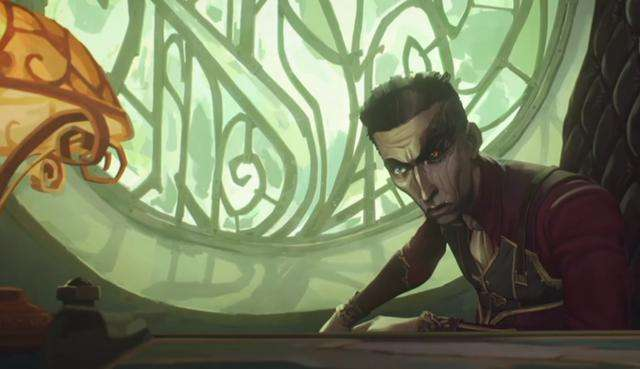
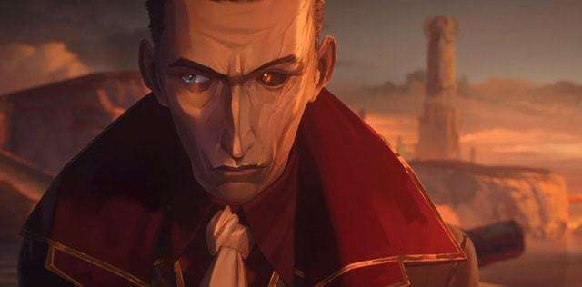
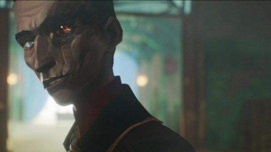

希尔科是激进派，跟范德尔本来是好朋友。范德尔是一个投降派，他不认为黑巷是上城的对手，他要保全自己和身边的所有人。 因为范德尔的软弱和出卖，希尔克差点被范德尔杀死，动画里出现了希尔科被范德尔掐在水里的很多镜头，范德尔的软弱，让希尔科想唤起范德尔的反抗意识。范德尔不想任何一个祖安人再因为自己的理想死在自己面前，于是他教会了蔚如何去为他人负责，做一个真正的领头人。 希尔科为了祖安人的尊严，不想再被高高在上的皮城人蔑视，于是他选择宣示武力，教导了金克丝，做自己不依靠任何人，才能赢来想要的一切。希尔科的目标，从让皮城恐惧，变成了让祖安独立，而他也真的做到了，他让杰斯感觉到了害怕，他让议会妥协了。


